1. Getting started
Install Glide 1.0.0 on Windows, Ubuntu/Linux, or Android. Connect both devices to the same local network. On desktop, open Receive and choose Turn on receiving. On Android, grant camera, Nearby, or file access when prompted for the action you chose. No account or internet service is required for local sharing.
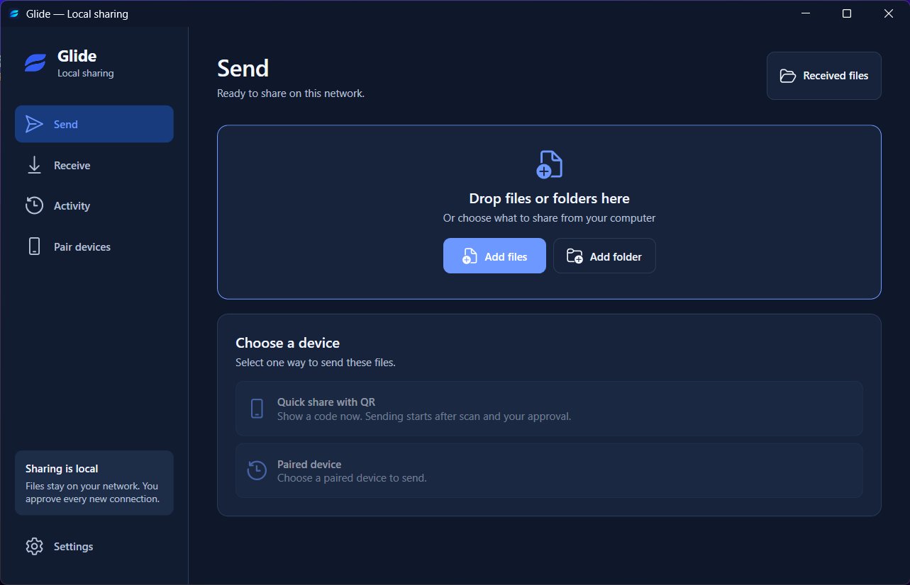
Windows Send
1 Send: choose files; 2 Quick share with QR: one-time transfer; 3 Paired device: saved identity.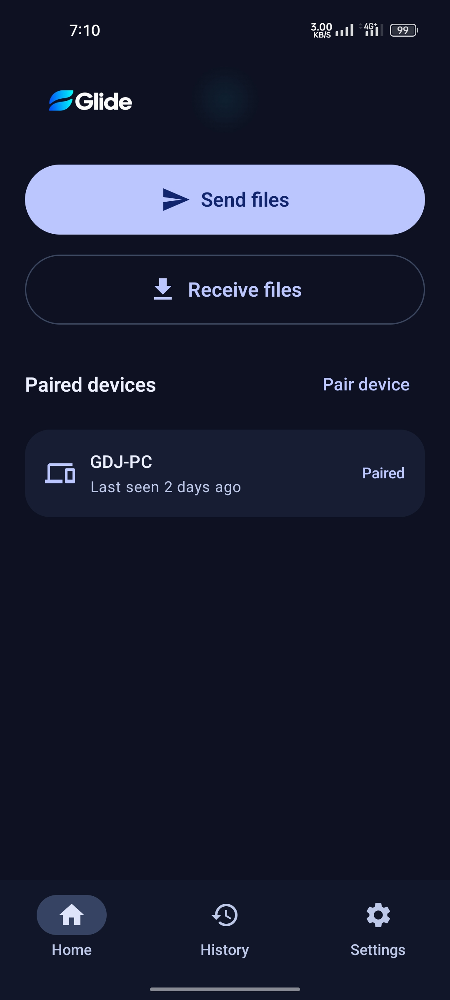
Android Home
1 Send files; 2 Receive files; 3 Pair device; 4 History and Settings in bottom navigation.2. Screen guide
The desktop sidebar has Send, Receive, Activity, Pair devices, and Settings. Android Home has Send files, Receive files, Pair device, plus Home, History, and Settings along the bottom. Use the controls on your platform.
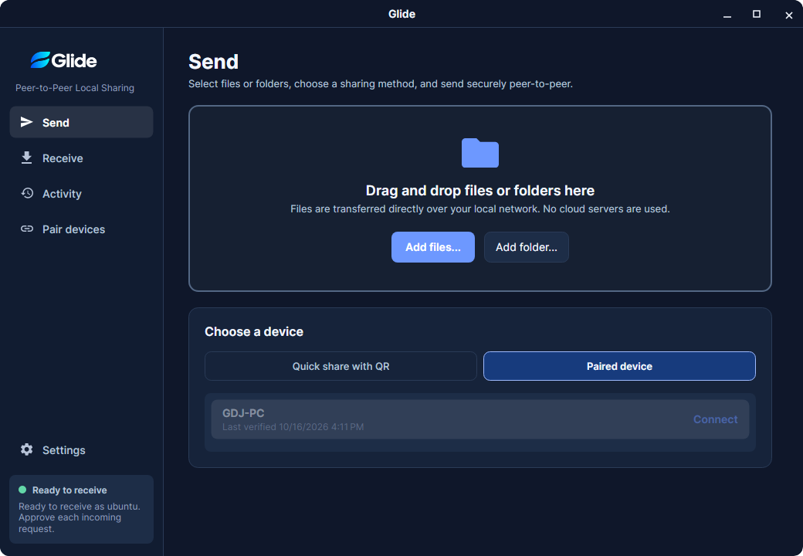
Linux Send
1 Add files / Add folder; 2 Quick share with QR; 3 Paired device.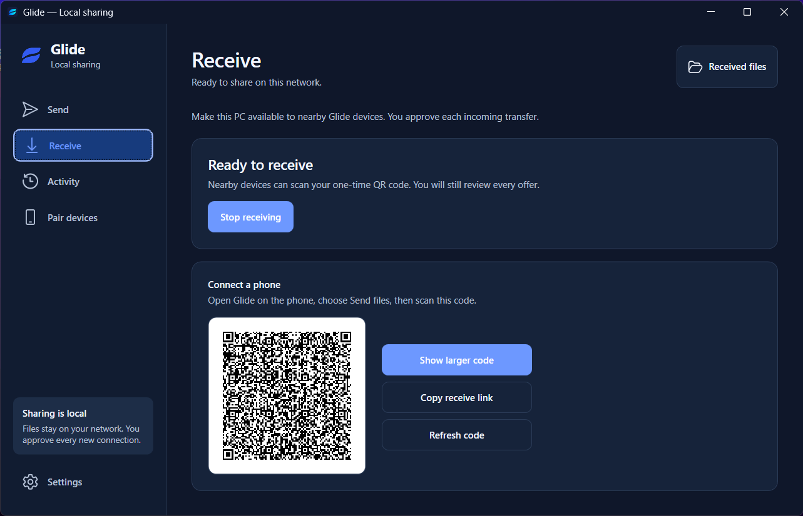
Windows Receive
1 Turn on/off receiving; 2 Transfer QR; 3 Show larger code; 4 Copy receive link; 5 Refresh code.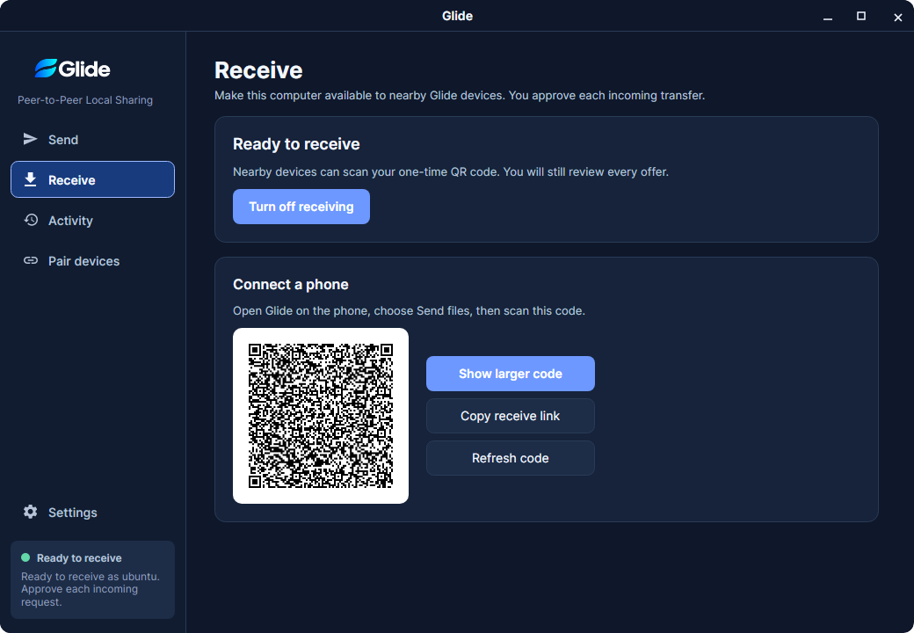
Linux Receive
1 Turn off receiving; 2 Connect a phone; 3 Show larger code; 4 Copy receive link; 5 Refresh code.3. Pair devices
Pair devices saves a trusted identity for later connections; it does not send files. Between desktops, choose Show my QR and code on one device. On the other, Find devices, select it, enter the displayed six-digit code, and approve on both devices. If discovery fails, use Pair by address with the local address and code. To pair a phone, use Pair device to scan the desktop pair-only QR. Enter pairing link accepts a current invitation. Use New code after expiry.
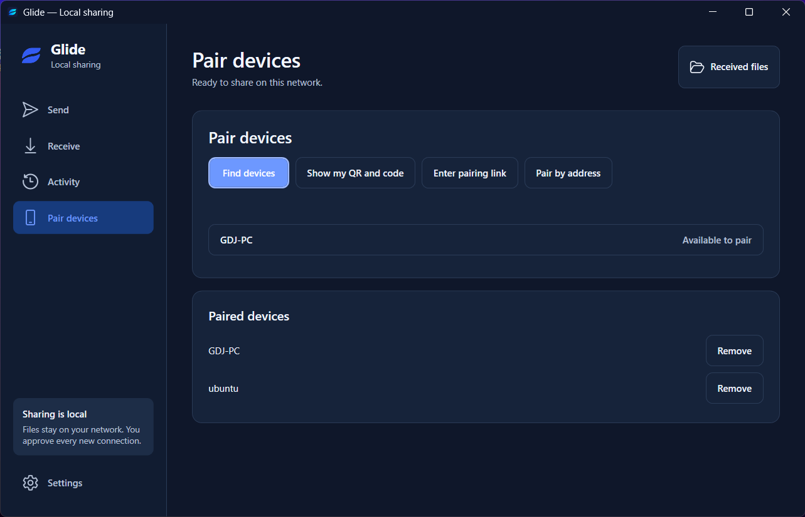
Windows pairing
1 Find devices; 2 Show my QR and code; 3 Enter pairing link; 4 Pair by address; 5 Remove revokes a saved identity.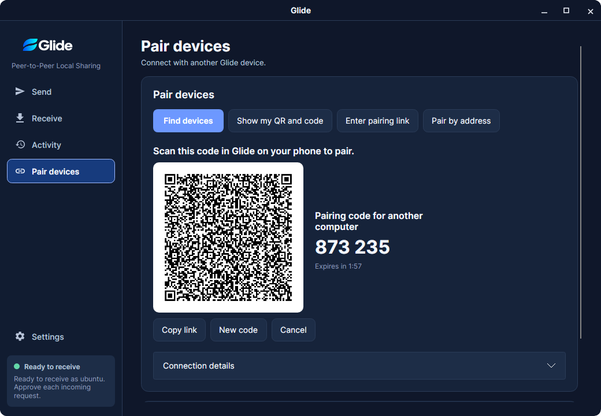
Linux pair-only QR
1 Pair QR; 2 Six-digit code; 3 Copy link; 4 New code; 5 Cancel. The pictured code was time-limited and is for illustration only.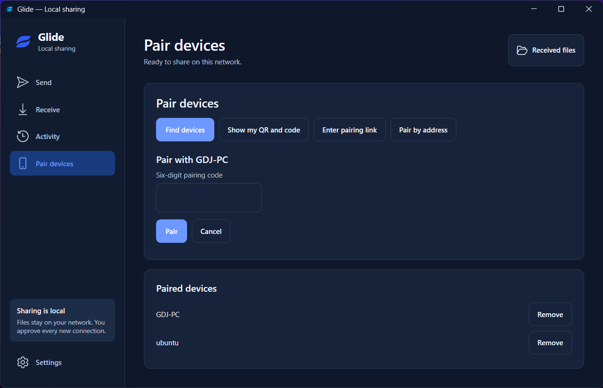
Desktop code entry
1 Selected device; 2 Six-digit pairing code; 3 Pair or Cancel.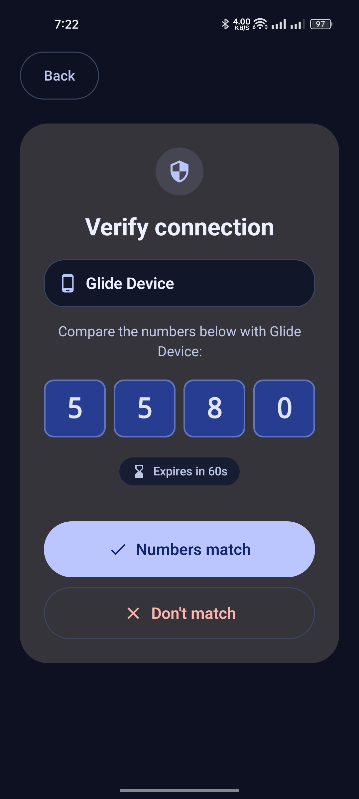
Android Nearby verification
Compare the four displayed digits on both phones. Tap Numbers match only if they agree. This is separate from desktop six-digit pairing.4. Send and receive
The receiver must tap Accept file or Accept transfer on every offer, including offers from paired devices. For QR sharing, scan the transfer QR on Receive, not the pair-only QR on Pair devices. Wait for verification and saving before treating the transfer as complete.
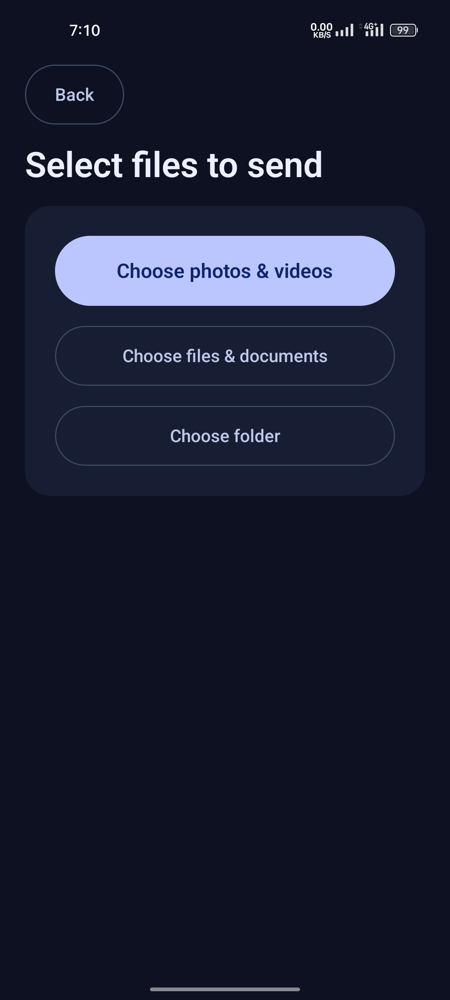
Android file selection
1 Choose photos & videos; 2 Choose files & documents; 3 Choose folder.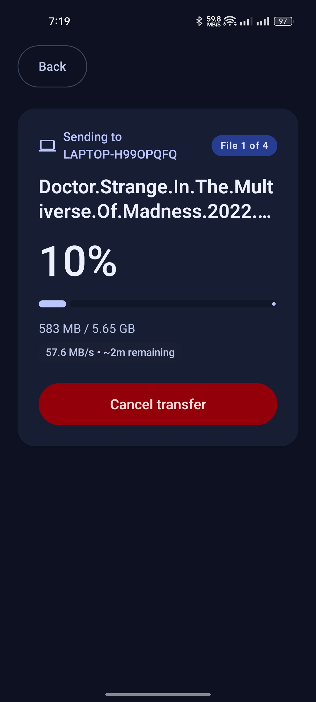
Android sending
1 Current file and overall progress; 2 Bytes and speed; 3 Cancel transfer.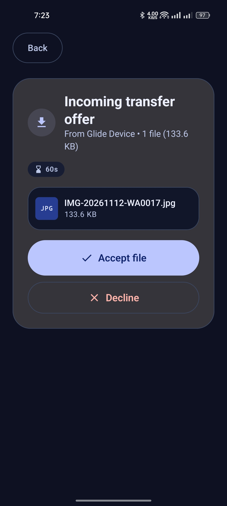
Android incoming offer
1 Check the sender and file count; 2 Accept file; 3 Decline.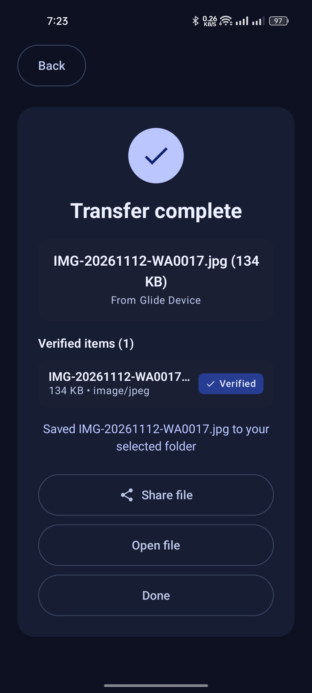
Android verified result
1 Verified item; 2 Share file; 3 Open file; 4 Done.Windows → Windows
- Sender: Send → Add files or Add folder → Paired device.
- Receiver: Receive → Turn on receiving; tap Accept transfer on the incoming offer.
- Sender: Choose the receiving desktop under Paired device and tap Connect. If it is not saved yet, first use Pair devices on both desktops.
- Receiver: Check Transfer complete and verified count in Activity; use Open folder or the destination shown in Settings.
Windows → Linux
- Sender: Send → Add files or Add folder → Paired device.
- Receiver: Receive → Turn on receiving; tap Accept transfer on the incoming offer.
- Sender: Choose the receiving desktop under Paired device and tap Connect. If it is not saved yet, first use Pair devices on both desktops.
- Receiver: Check Transfer complete and verified count in Activity; use Open folder or the destination shown in Settings.
Windows → Android
- Sender: Send → Add files or Add folder → Paired device.
- Receiver: Open Receive files and tap Accept file on the incoming offer.
- Sender: Choose Quick share with QR on the desktop. On the phone, use Receive files → Scan PC QR code to scan the sender's QR.
- Receiver: Check Transfer complete and Verified. The file saves to Download/Glide or the folder selected in Settings.
Linux → Linux
- Sender: Send → Add files or Add folder → Paired device.
- Receiver: Receive → Turn on receiving; tap Accept transfer on the incoming offer.
- Sender: Choose the receiving desktop under Paired device and tap Connect. If it is not saved yet, first use Pair devices on both desktops.
- Receiver: Check Transfer complete and verified count in Activity; use Open folder or the destination shown in Settings.
Linux → Windows
- Sender: Send → Add files or Add folder → Paired device.
- Receiver: Receive → Turn on receiving; tap Accept transfer on the incoming offer.
- Sender: Choose the receiving desktop under Paired device and tap Connect. If it is not saved yet, first use Pair devices on both desktops.
- Receiver: Check Transfer complete and verified count in Activity; use Open folder or the destination shown in Settings.
Linux → Android
- Sender: Send → Add files or Add folder → Paired device.
- Receiver: Open Receive files and tap Accept file on the incoming offer.
- Sender: Choose Quick share with QR on the desktop. On the phone, use Receive files → Scan PC QR code to scan the sender's QR.
- Receiver: Check Transfer complete and Verified. The file saves to Download/Glide or the folder selected in Settings.
Android → Android
- Sender: Home → Send files → Choose files & documents or Choose folder → Proceed to send.
- Receiver: Open Receive files and tap Accept file on the incoming offer.
- Sender: In Select recipient, choose the other phone; compare Verify connection numbers on both devices and tap Numbers match only when they agree.
- Receiver: Check Transfer complete and Verified. The file saves to Download/Glide or the folder selected in Settings.
Android → Windows
- Sender: Home → Send files → Choose files & documents or Choose folder → Proceed to send.
- Receiver: Receive → Turn on receiving; tap Accept transfer on the incoming offer.
- Sender: On the desktop, show the transfer QR in Receive. Scan it on the phone or paste its receive invitation link.
- Receiver: Check Transfer complete and verified count in Activity; use Open folder or the destination shown in Settings.
Android → Linux
- Sender: Home → Send files → Choose files & documents or Choose folder → Proceed to send.
- Receiver: Receive → Turn on receiving; tap Accept transfer on the incoming offer.
- Sender: On the desktop, show the transfer QR in Receive. Scan it on the phone or paste its receive invitation link.
- Receiver: Check Transfer complete and verified count in Activity; use Open folder or the destination shown in Settings.
5. Find received files
Android automatically saves verified files to Download/Glide. Change this in Settings → Received file save location → Choose folder. On Windows/Linux, view or change the destination in Settings with Change folder or Browse. Activity also offers Open folder for received items.
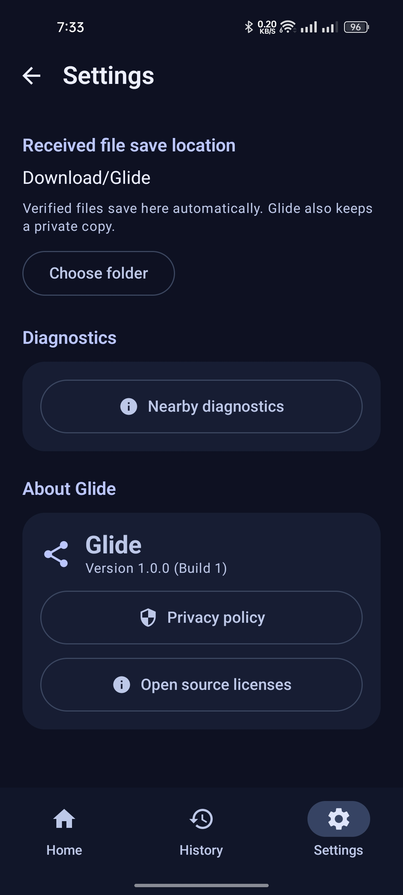
Android save location
1 Download/Glide is the default; 2 Choose folder changes it; 3 verified files save automatically.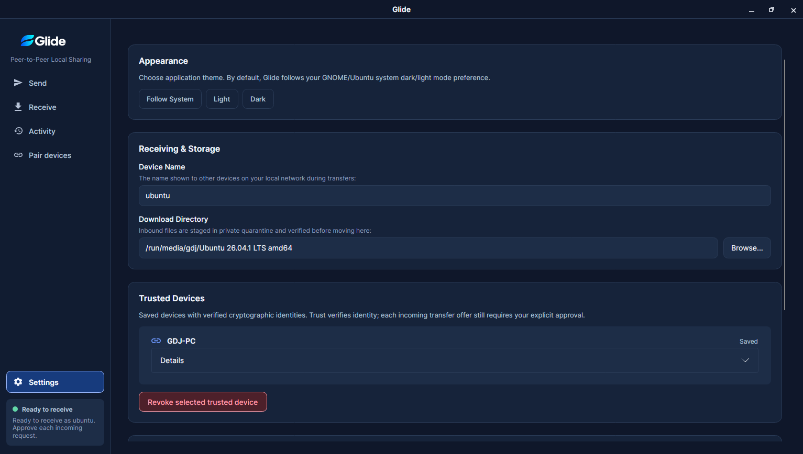
Linux Settings
1 Theme; 2 Device Name; 3 Download Directory and Browse; 4 Trusted Devices.6. Activity and History
Desktop Activity shows an active transfer, its result, and verified history. Use Search history, All/Sent/Received filters, Open folder, and Clear history. On failure, expand Technical details and use Try again when offered. Android History has All/Sent/Received filters and Clear history.
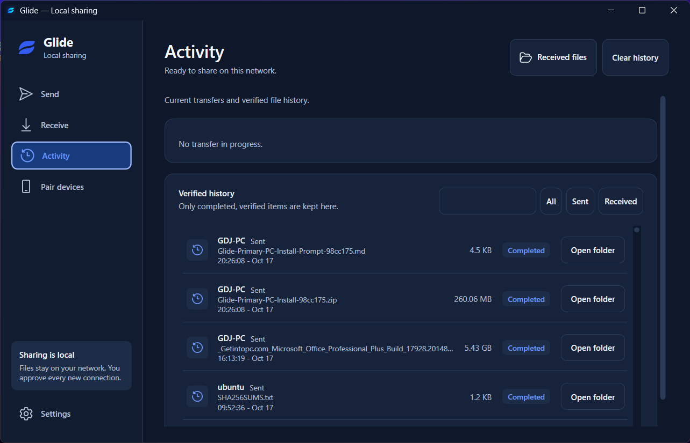
Windows Activity
1 Current transfer/result; 2 Search history; 3 All/Sent/Received; 4 Open folder; 5 Clear history.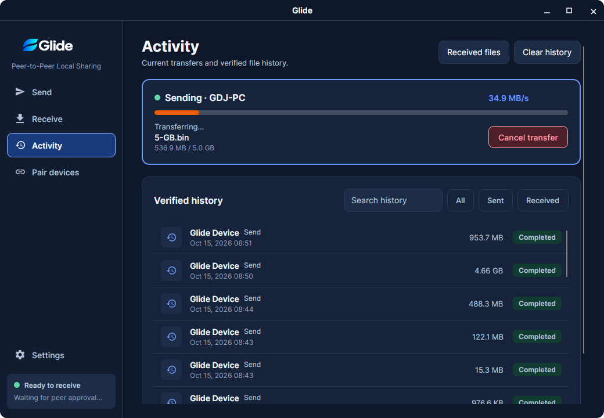
Linux Activity
1 Current transfer; 2 progress and speed; 3 Cancel transfer; 4 verified history below.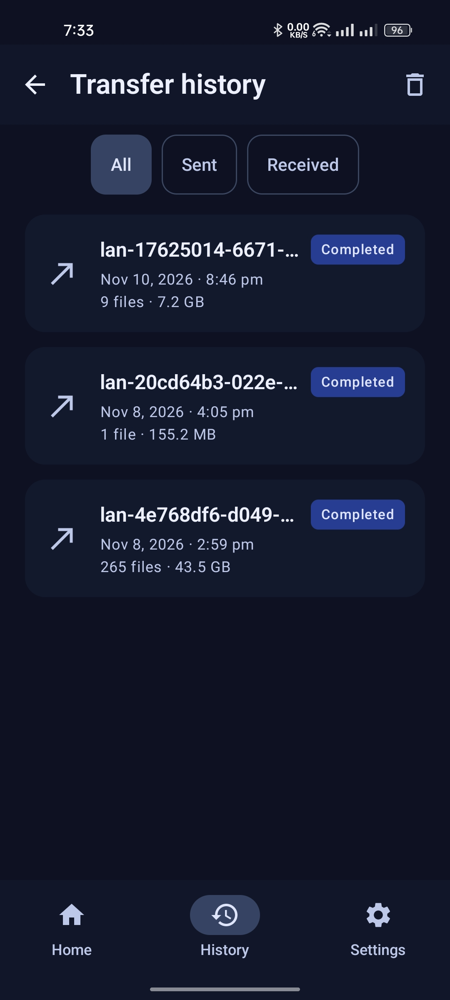
Android Transfer history
1 All/Sent/Received; 2 verified entries; 3 Clear history.7. Settings
Windows: Appearance, received-file folder, Advanced connection details, and Trusted devices. Linux: Follow System/Light/Dark, Device Name, Download Directory, Trusted Devices, Listening Port, Export diagnostic logs, and About. Android: device name, Theme mode, Dynamic color, Reduced motion, Notification details, Keep screen awake, Manage trusted devices, Received file save location, Nearby diagnostics, About, Privacy policy, and Open source licenses. Delete all concerns private received copies; read its confirmation carefully before using it.
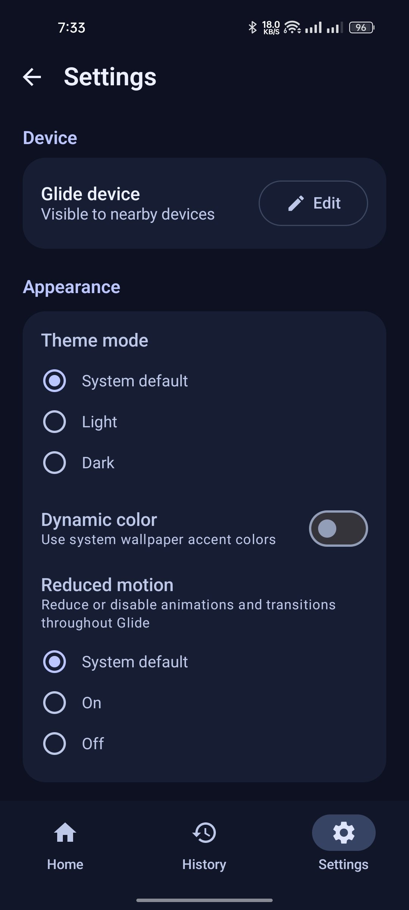
Android Appearance
1 Edit device name; 2 Theme mode; 3 Dynamic color; 4 Reduced motion.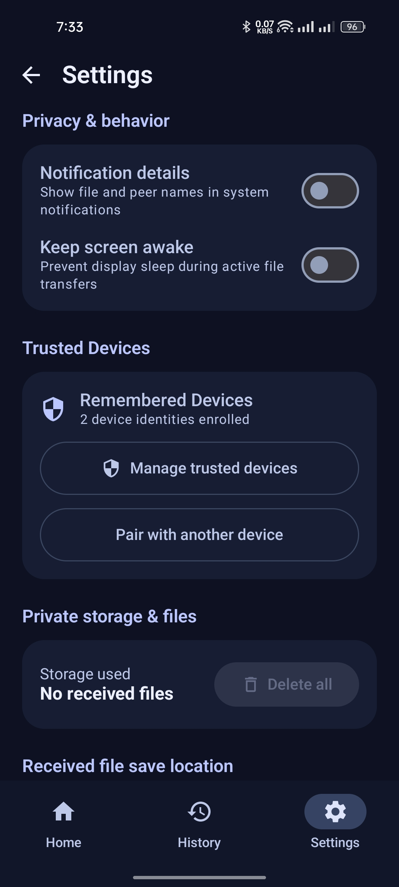
Android privacy and trust
1 Notification details; 2 Keep screen awake; 3 Manage trusted devices; 4 Pair with another device.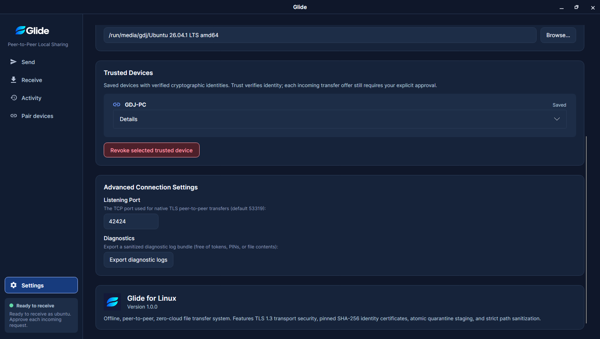
Linux advanced settings
1 Trusted Devices and revoke; 2 Listening Port; 3 Export diagnostic logs; 4 About.8. Troubleshooting
- No nearby device / device offline
- Turn on receiving or Show my QR and code on the other device; check both are on the same LAN; select Try again or Pair by address.
- Bluetooth or Wi-Fi off
- On Android, use Open Bluetooth settings or Open Wi-Fi settings, return to Glide, then Check again.
- Expired code or link
- Use New code / Refresh code on the displaying device and enter or scan the new invitation.
- Declined or cancelled
- Start a new send and obtain receiver approval again. A cancelled attempt is not a verified transfer.
- Interrupted or failed transfer
- Check Activity/History and Technical details, check network and free space, then Try again where offered.
- Saved file not found
- Check Android Download/Glide or the folder in Settings; on desktop use Settings or Activity → Open folder.
9. Apple status and glossary
macOS and iOS development is paused. Target-host builds and physical-device validation are pending, so this edition does not provide unverified Apple procedures.
- Pair-only QR
- Saves a trusted identity without sending files.
- Transfer QR
- Connects a sender to a current receiving invitation for a file offer.
- Verified
- Received content passed the integrity check.